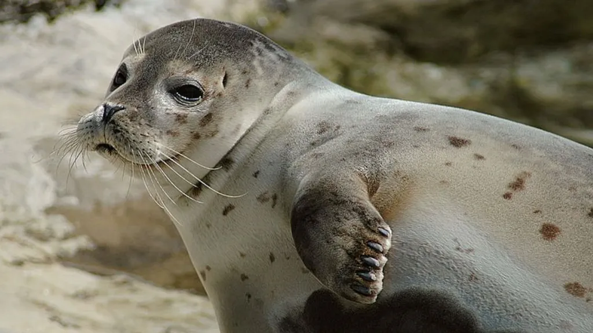
Tuleň obecný
Phoca vitulina
Nejrozšířenější druh severní polokoule. Má typicky jemně skvrnitou kůži.
Kompletní vědecký portál splňující standardy moderního, rychlého a přístupného webu.
Tuleni (Phocidae) jsou savci dokonale přizpůsobení životu ve vodním prostředí. Jejich aerodynamické tělo vřetenovitého tvaru minimalizuje odpor vody při plavání a potápění. Od lachtanovitých se liší několika zásadními znaky: nemají žádné vnější ušní boltce a jejich zadní ploutve neustále směřují dozadu.
Při potápění dokáží tuleni reflexivně snížit svou srdeční frekvenci na pouhých 10 % běžného stavu, díky čemuž ušetří kyslík na extrémně dlouhé ponory.
Hmatové vousy na čumáku dokáží zachytit jemné hydrodynamické stopy plovoucí ryby i v naprosté tmě hlubokého oceánu.
Před mrazem v polárních oblastech je spolehlivě chrání silná vrstva podkožního tuku (tran), která dosahuje tloušťky až 10 cm.
Ano, tuleni dokáží spát pod vodou. Jejich tělo automaticky a bez plného probuzení vyplave na hladinu pro nádech.

Phoca vitulina
Nejrozšířenější druh severní polokoule. Má typicky jemně skvrnitou kůži.
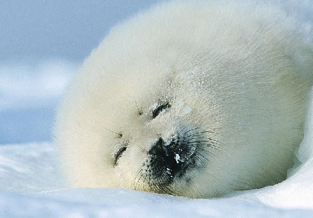
Pagophilus groenlandicus
Obyvatel ledových plání. Známý sněhově bílým kožichem svých mláďat.
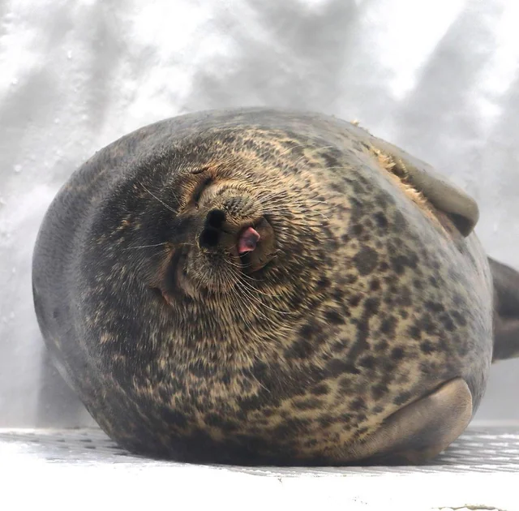
Pusa hispida
Nejmenší arktický druh, který si v ledu vyhrabává dýchací otvory.
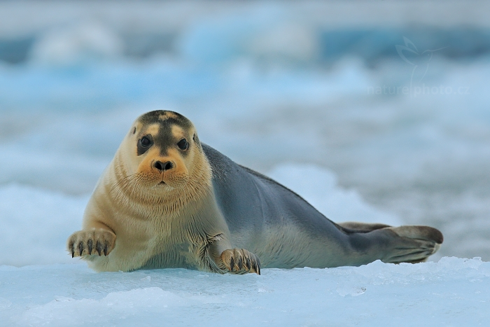
Erignathus barbatus
Robustní tuleň s nápadně hustým vousem, kterým mapuje mořské dno.
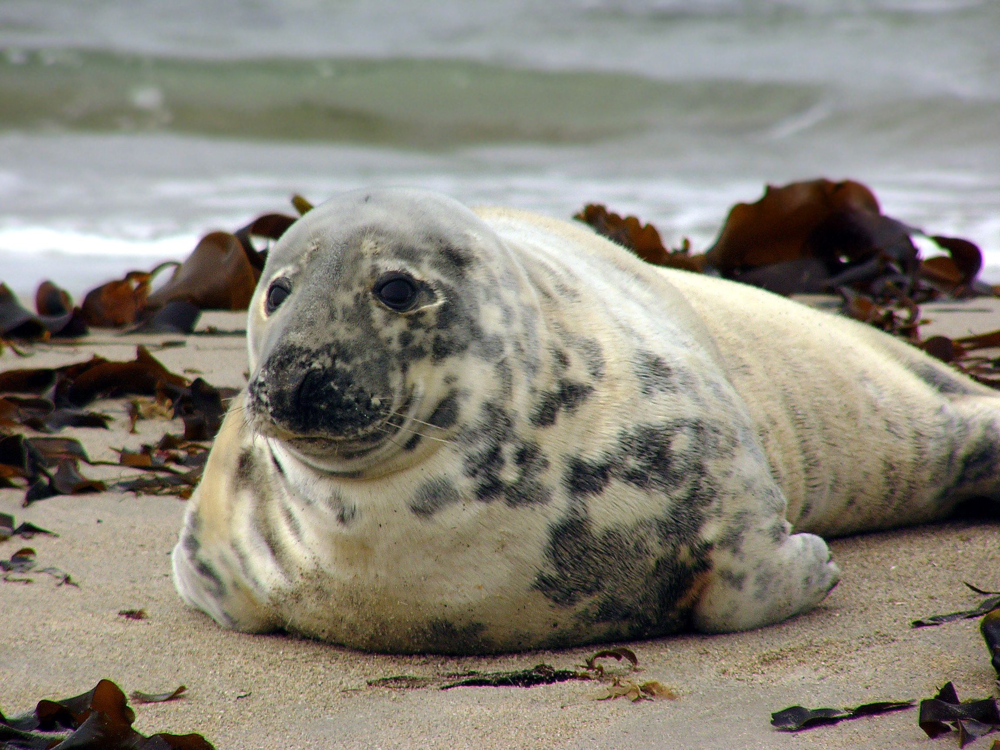
Halichoerus grypus
Velký druh s charakteristicky protáhlým, špičatým profilem hlavy.
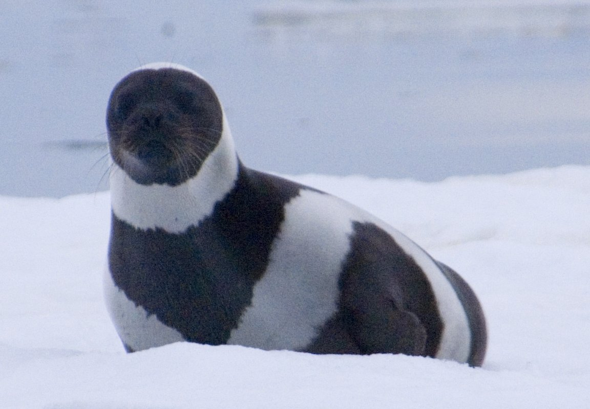
Histriophoca fasciata
Vzácný a kontrastní druh s širokými bílými pruhy na tmavém těle.
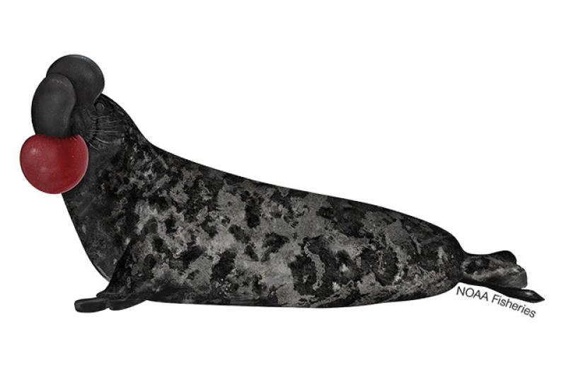
Cystophora cristata
Samci mají nafukovací kožený vak na hlavě a červenou nosní blánu.
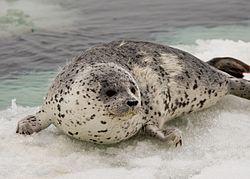
Phoca largha
Žije v severním Tichomoří, hnízdí a odpočívá výhradně na plovoucím ledu.
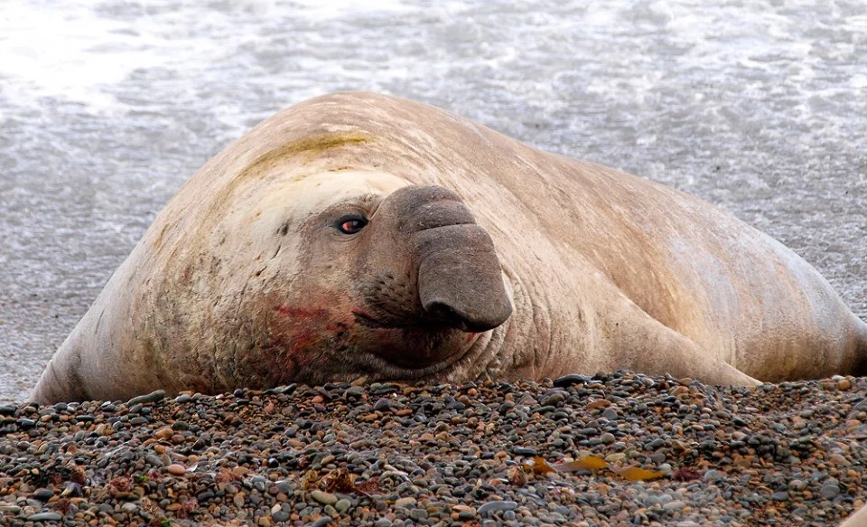
Mirounga leonina
Největší ploutvonožec planety. Samci mají chobot a váží až 4 000 kg.
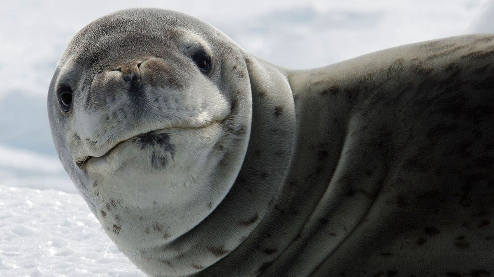
Hydrurga leptonyx
Obávaný antarktický predátor s mohutnými zuby. Aktivně loví tučňáky.
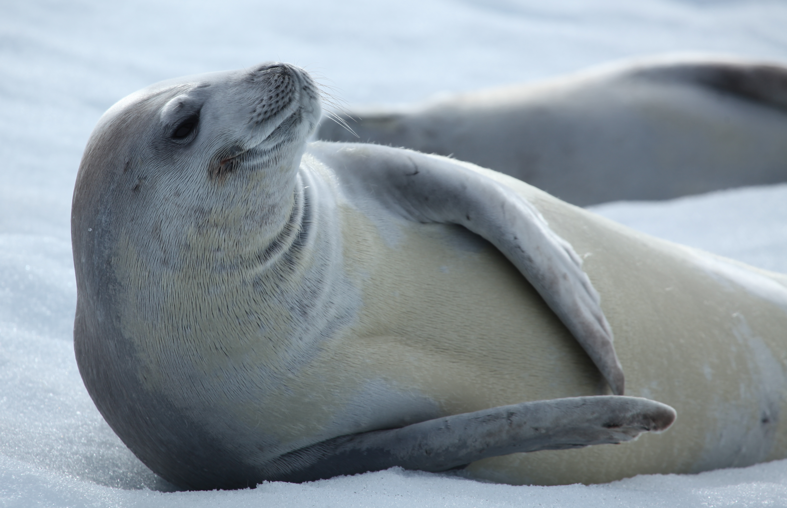
Lobodon carcinophaga
Nejpočetnější tuleň světa. Speciálními zuby filtruje z vody drobný kril.
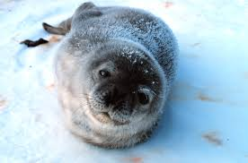
Leptonychotes weddellii
Obyvatel extrémního jihu. Dokáže se potopit do hloubek přes 600 metrů.
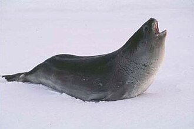
Ommatophoca rossii
Tajuplný, málo prozkoumaný antarktický samotář s obrovskýma očima.
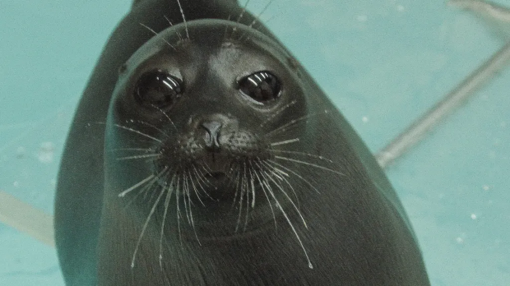
Pusa sibirica
Jediný výhradně sladkovodní druh na světě, endemit sibiřského jezera Bajkal.
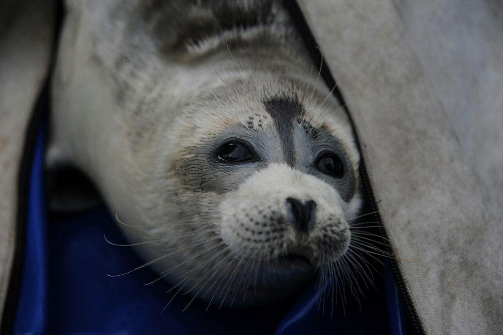
Pusa caspica
Žije pouze v izolovaném Kaspickém moři a patří mezi ohrožené druhy.
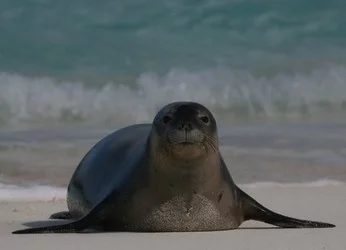
Monachus monachus
Kriticky ohrožený tropický druh. Vyhledává teplá moře a úkryty v jeskyních.
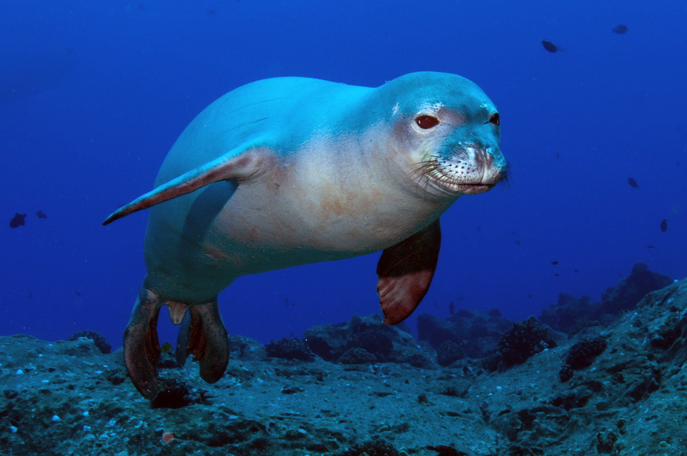
Neomonachus schauinslandi
Vzácný obyvatel teplých korálových pláží kolem Havajských ostrovů.